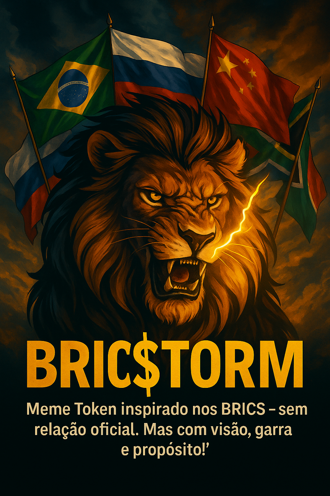

BRIC$TORM
O Meme Token da Revolução Financeira Multipolar 🌍
Por que BRIC$TORM?
A revolução financeira que quebra as barreiras do sistema tradicional. BRIC$TORM é mais que um token, é um movimento que acredita na força coletiva, na descentralização e na visão para o futuro.
Meme Token inspirado nos BRICS — sem relação oficial. Mas com visão, garra e propósito!
⚠️ Disclaimer: BRIC$TORM é um projeto meme independente, criado de forma comunitária e descentralizada, inspirado na ideia de uma revolução financeira global. Não possui afiliação oficial com o bloco BRICS (Brasil, Rússia, Índia, China, África do Sul), nem com qualquer entidade governamental.
Tokenomics
Distribuição transparente: 30% bloqueado para comunidade, 19.899% de liquidez já travada, 1% de taxa por transação para iniciativas futuras.
Roadmap
- Q3 2025: Lçamento do Token e travamento de liquidez
- Q4 2025: Engajamento da comunidade e expansão em redes sociais
- 2026: Listagens, parcerias e impacto social real
Junte-se à Comunidade
Participe da revolução: